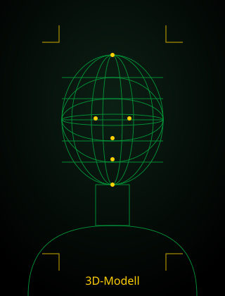

Record
A guide shows you where to look. The app checks light, sharpness and motion and keeps only the frames that are actually good.
Development status: FaceScan is an experimental prototype. The rest of this page describes a product vision, not available features. Hair and back-of-head capture, metric accuracy, most formats and the purchase flow do not exist yet. The prototype downloads a model over the internet on first launch. Please do not send payments. View implementation status.
An estimated face surface from the front camera, with optional texture and animation. Not a complete head and no validated 3D accuracy.

Three steps
The app guides you. You don't need any 3D knowledge – just one minute and decent light.
A guide shows you where to look. The app checks light, sharpness and motion and keeps only the frames that are actually good.
Up to 120 frames become real 3D geometry – on your phone, with face and hair handled separately so both come out right.
Tell us what you need the model for, and FaceScan delivers the matching format including textures, skeleton and expression shapes.
Result
Drag the slider: the photo on the left, the computed 3D model on the right.
 Photo
3D model
Photo
3D model
Placeholder artwork – real sample scans arrive with the first beta.
Features
🧑
Separate reconstruction for skin and hair – from pores to strands, in three honest quality levels.
😀
52 expression shapes (ARKit standard) plus head and body motion – live from your phone camera, markerless, without ARCore.
📦
GLB, FBX, USD/USDZ, Alembic, OBJ, Collada, PLY, STL – with textures, skeleton, morphs and animation.
🔒
Computing, storage and export happen on the device. Encrypted vault, no upload, no tracking.
🧭
No jargon without an explanation. One guide, one traffic light, one button – and a format advisor for your target app.
🛠️
Clean topology, fixed UVs, complete material maps – built for Blender, ZBrush, Maya or Substance Painter.
Compatibility
FaceScan asks what you need the model for – then picks the format, units, axes and texture set to match.
Plus a full texture set: color, detail relief, roughness, AO, SSS mask and displacement (up to 8K), with units and axes adapted to your target app on request.
Animation
FaceScan tracks your facial expression and body movement live – on the phone, no suit, no markers, no ARCore. Record it and export the motion to BVH, Alembic, FBX or USD.
Target: 25+ frames per second on mid-range phones.
Privacy
Your face is not a commodity. That's why FaceScan works strictly locally.
.fscan is
documented: your data stays readable without us.Pricing
Prices and features are proposals, not an offer. Please do not pay.
Possible pricing and payment methods are being explored; there are currently no sales or payment processing.
€0 · personal
€39 · one-time · lifetime
€129 · one-time · lifetime
Credit packs (for occasional users, never expire): Export pack (10 exports) €4.90 · Hair detail pack €3.90 · Motion pack (30 min) €6.90 · Print pack €2.90. All prices are EUR equivalents; the crypto amount is calculated at the exchange rate on the day of payment.
Please do not send cryptocurrency. There is no purchase or unlocking process yet.
We translate every term: mesh = your 3D model (a net of triangles). UV = the unwrapped layout, so it can be painted. Rig = the invisible skeleton used to move it. Each of these terms has an in-app “ⓘ What's this?”.
And at export time FaceScan doesn't ask for a format – it asks for your destination: “Blender”, “Unreal”, “3D print”, “Web”. The app handles the rest.
For beginners
Six minutes from opening the app to a finished file – that's the promise we test for.
FAQ
Android 10 or newer. On mid-range devices a standard scan takes about three minutes, on flagships less. A depth sensor or ARCore is not required.
Honestly: reconstructing individual hairs from phone photos is unsolved worldwide. FaceScan works in three levels instead: volume (free), hair cards with strand structure (Creator) and real strand curves (Studio). The app tells you up front which level is possible.
Yes. Scanning, computing, animating and exporting run entirely on the device. The app only needs a network when you decide to buy something – and even then it stays fully usable.
They stay on your phone, encrypted inside the app vault. You decide whether the source frames are kept after the scan or deleted. There is no upload and no account.
With Creator, yes – for your own commercial projects up to €100,000 annual revenue; with Studio, without a limit. Biometric identification, surveillance and deceptive or derogatory depictions are not allowed – and you need the consent of the person depicted (the app includes a model-release generator for that).
GLB, OBJ+MTL, PLY, STL (free), FBX, USD, USDZ, Collada (Creator), Alembic, BVH, VRM, CSV/JSON (Studio) – each with a texture set and, on request, skeleton, morph targets and animation.
FaceScan uses on-device face and body tracking: 478 points on the face, 52 expression values, 33 body points in real metres. That's enough to drive your avatar – no markers, no suit, no Google Play services.
Because it fits the product: no accounts, no card data, no chargebacks, no payment processor in the loop. As a bonus we pass the saved fees on as a 20 % discount.
Yes. Voluntary 14-day refund to the sending address, minus network fees. Just contact us with your transaction ID.
It's planned after the Android launch. The compute core is written in C++ and can be reused – but camera work and app review remain real effort.
Roadmap
Got a wish? Write to us: hippie.highho@gmail.com
View project, stay offline, export to every professional format.